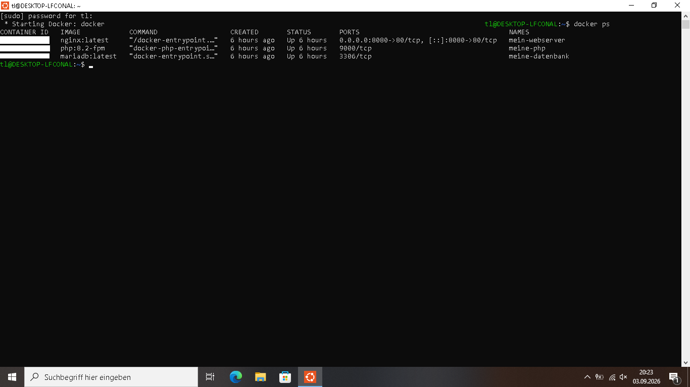
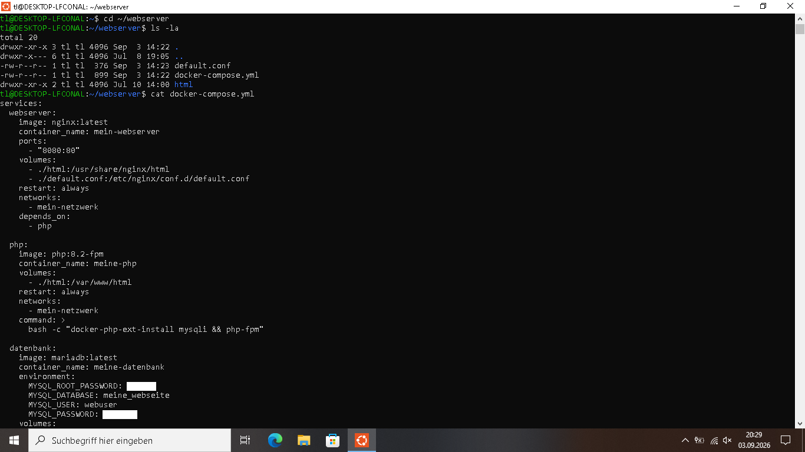

Docker – Multi-Container-Umgebung
Eine Multi-Container-Umgebung mit Webserver, PHP und Datenbank aufgesetzt – orchestriert mit Docker Compose.
Ziel
Eine Umgebung aufsetzen, in der Nginx, PHP und MariaDB als
eigenständige Container zusammenarbeiten – gesteuert über
eine einzige docker-compose.yml.
Technologien
- Windows 11 mit WSL2
- Ubuntu 24.04 (WSL2)
- Docker & Docker Compose
- Nginx (Webserver)
- PHP 8.2 (Backend)
- MariaDB (Datenbank)
Einblick ins System
Hier sieht man die laufenden Container und die Konfiguration:

Alle drei Container laufen stabil (nginx, php:8.2-fpm, mariadb).

Die docker-compose.yml definiert Webserver, PHP und Datenbank in einem Netzwerk.
Architektur
Internet
│
▼
┌─────────────┐
│ Nginx │ Webserver (Port 8080)
└──────┬──────┘
│
▼
┌─────────────┐
│ PHP │ PHP 8.2 mit MySQLi
└──────┬──────┘
│
▼
┌─────────────┐
│ MariaDB │ Datenbank
└─────────────┘
Probleme & Lösungen
Problem 1: PHP konnte keine Verbindung zur Datenbank herstellen
Fehlermeldung: SQLSTATE[HY000] [2002] Connection refused.
Der PHP-Container konnte die MariaDB nicht erreichen.
Lösung: Mit docker logs die Fehlerlogs
geprüft. Die Container im selben Docker-Netzwerk verbunden und die
Umgebungsvariablen der Datenbankverbindung korrigiert.
Problem 2: MySQLi-Erweiterung fehlte
PHP konnte die Datenbank nicht ansprechen, weil die MySQLi-Erweiterung nicht installiert war.
Lösung: Erweiterung im Container mit
docker-php-ext-install mysqli nachinstalliert.
Was ich gelernt habe
- Containerisierung mit Docker und Docker Compose
- Netzwerkkommunikation zwischen Containern
- Volumes für persistente Daten
- Fehlerbehebung mit
docker logsunddocker exec